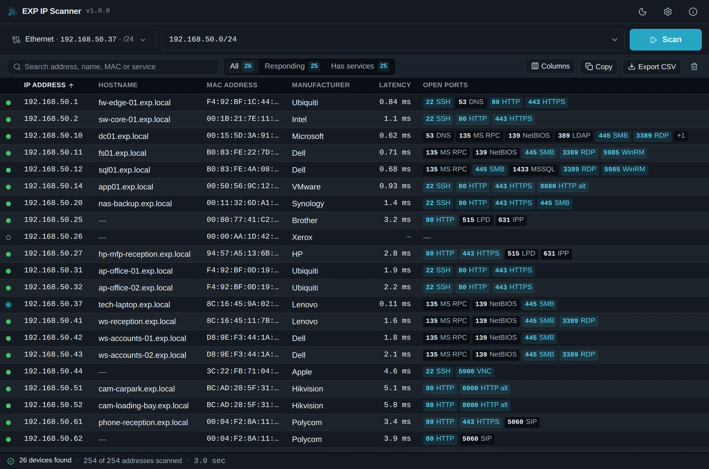

Portable
RecommendedFor field and support work. Extract it and run it.
- No installation, no administrator rights
- Runs from a USB stick, a share or a tools folder
- Never writes to the folder it was extracted into
- Update by downloading the next ZIP
EXP Technical Field Tools
Find what’s on the network. Fast.
A lightweight Windows network scanner built for the way IT engineers actually work. Detect the active network, find devices quickly, identify what is there, and jump directly into Remote Desktop, file shares, SSH, or a device web interface.

Built for real support work
One screen, no training needed. Launch it, and the network you are plugged into is already in the target field.
Picks the adapter you are actually working through, ranking a wired or wireless NIC above a Hyper-V switch, a Docker bridge or a VPN tunnel — and still lets you choose any of them.
ICMP, TCP and the ARP cache together, so printers, cameras and hardened workstations that ignore ping are still found. No administrator rights needed.
Reverse DNS runs alongside the sweep, so names appear while it is still going.
The full IEEE registry is built in, so Dell, HP, Cisco, Ubiquiti, Apple, Brother and the rest are named offline on an isolated customer network.
A curated set of the ports that matter on a business network, shown as words:
445 SMB, 3389 RDP, 9100 Print.
Right-click a device for Remote Desktop, its file shares, SSH, VNC or its web interface — only the ones its open ports actually support.
Ping in the details panel, or open a command prompt already running against it.
A spreadsheet that opens cleanly in Excel, or tab-separated rows that paste straight into a ticket, an email or Teams.
Download, run, scan, close. No installer, no administrator rights, and it never writes to the folder you extracted it into.
No inventory database and no scan history. Results live in memory until you export them, because the next site visit is a different customer.
Get EXP IP Scanner
Windows 10 and Windows 11, x64. Both editions are the same application.
For field and support work. Extract it and run it.
For a workstation you use every day.
Both editions need the Microsoft Edge WebView2 Runtime, which ships with Windows 11 and with current Windows 10. This build is not code-signed, so Windows SmartScreen may show an unknown-publisher warning the first time; choose “More info”, then “Run anyway”.
Deployment options
| Portable | Installer | |
|---|---|---|
| Installation | None — extract and run | Windows installer, all users |
| Administrator rights | Not needed | Needed to install |
| Scanning | Identical | Identical |
| Updates | Download the next ZIP | Checks GitHub when you ask |
| Start Menu entry | No | Yes |
| Scan data kept on disk | None | None |
Intentionally focused
EXP IP Scanner is a read-only discovery and administration utility, and intentionally small. It keeps no inventory database, no scan history and no change tracking; it does no vulnerability scanning, no credential testing and no internet-wide scanning. Scan only networks you are authorised to inspect.